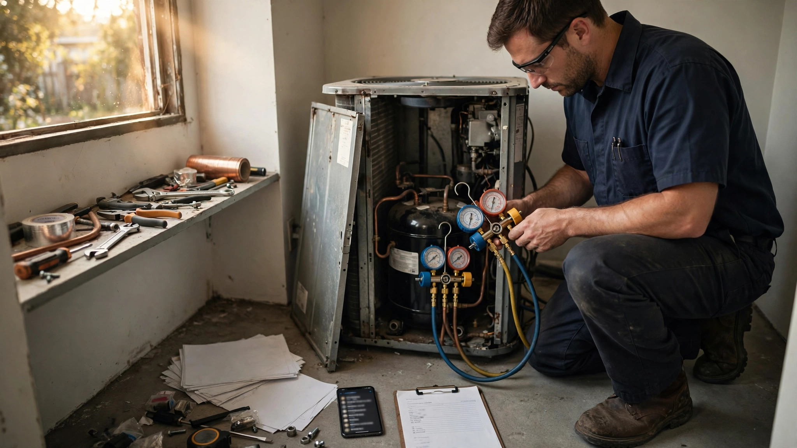

HVAC Warranty Claims Recovery SaaS for Independent Contractors
Carrier Global accrued $1.04 for every $100 in HVAC product revenue toward warranty claims in 2024, the highest rate in five years, while its warranty reserve crossed $793 million. The money exists. But the 120,000 contractors who actually perform those repairs file an estimated 30–40% fewer claims than they are owed, because the documentation burden on a $200 reimbursement exceeds the cost of just eating the loss. The aggregate leakage is approximately $1.2 billion per year in unfiled or underpaid warranty claims across the independent HVAC contractor base. Nobody sells them a system to recover it.

The Problem
The U.S. heating and air-conditioning contractor industry generated $159.4 billion in revenue in 2026, spread across roughly 120,000 businesses (IBISWorld). The vast majority are small: the median HVAC company runs fewer than ten trucks, operates on net margins between 2.5% and 5%, and employs technicians whose fully loaded cost sits near $56 per hour while retail labor rates range from $100 to $250 per hour nationally (BLS, Angi 2026 data). More than half of home service businesses, by one industry accountant's estimate, do not turn a profit at all. They keep the trucks running. They keep answering the phone. They keep losing money.
One of the quietest ways they lose it is warranty work, the slow bleed that no P&L line item captures.
Every major HVAC manufacturer offers a parts warranty on residential and light commercial equipment, typically 5–10 years on core components (compressors, heat exchangers, coils) and 1 year on labor. After that first year, the homeowner's "10-year warranty" covers parts only. When a compressor fails in year four, the manufacturer ships a replacement compressor at no charge. The contractor supplies the labor, the refrigerant, the brazing materials, the evacuation, the startup, and the return trip if something goes wrong. The manufacturer reimburses the contractor for the parts-warranty claim, but the labor reimbursement, if any, is a flat fee that bears no relationship to the contractor's actual cost of performing the work.
FranklinWH, a residential energy storage manufacturer, publishes its labor reimbursement schedule openly: $200 per truck roll for removal and replacement, $200 per defective battery module replaced, $150 per gateway swap. A truck roll in most U.S. markets costs the contractor $85–$150 in vehicle, insurance, and opportunity cost before the technician touches a tool, according to industry benchmarks from RelayFi and HVAC Know It All. A compressor swap that takes a skilled technician three hours at the contractor's retail rate of $175 per hour represents $525 in labor revenue at retail. The manufacturer might reimburse $150–$250 for that labor. The contractor absorbs the difference as an unrecorded cost of maintaining the customer relationship.
That is the reimbursement gap on claims the contractor actually files. The larger problem is the claims that never get filed at all.
Each manufacturer maintains its own warranty claims portal with distinct documentation requirements. Carrier uses its HVACpartners.com platform. Trane operates through its Trane Connect dealer portal. Lennox runs LennoxPros.com. Goodman, Daikin, and Rheem each maintain their own separate dealer portals with incompatible workflows. Each requires a different combination of model numbers, serial numbers, installation dates, proof of registration, failure codes, photographs, and in some cases the defective part shipped back within 30–60 days. A contractor who services five brands across a typical mix of residential equipment must navigate five different portals, five different documentation workflows, and five different reimbursement timelines that range from 30 to 120 days. A YouTube tutorial from an independent HVAC contractor titled "How to Fill Out an HVAC Warranty Repair Claim Worksheet" opens with "Claims Denied. Your Fault." — then walks through five documentation steps that, done properly, take 20–30 minutes per claim.
Twenty to thirty minutes of unbillable administrative time on a claim that might pay $150–$250. For a contractor whose technicians are booked at $150–$250 per hour on revenue-generating work, the opportunity cost of filing that claim exceeds the reimbursement. So the contractor eats the part, eats the labor, and moves on. The homeowner never knows. The manufacturer never pays. The contractor's margin erodes one unfiled claim at a time.
Market Size
TAM calculation: The addressable market is the approximately 85,000 HVAC contractors (out of 120,000 total businesses per IBISWorld) that actively perform residential and light commercial service work involving manufacturer warranties. One-person operations doing new construction only (~15,000) and pure commercial/industrial contractors (~20,000) are excluded because their warranty interaction patterns differ materially. At a blended subscription of $179/month (Standard tier: automated claims filing for top 5 manufacturers, serial number capture via phone camera, deadline tracking) and $399/month (Premium tier: full multi-manufacturer claims automation, recovery audits on historical service records, labor reimbursement benchmarking, parts return logistics), with an estimated 70/30 split, the blended ARPU is $245/month. At 85,000 addressable contractors, the base TAM is $249.9 million in annual recurring revenue.
A secondary revenue stream applies the RCM (revenue cycle management) model from healthcare: rather than a flat subscription, the platform takes a percentage of recovered claims. At an average recovered claim value of $275 and a 12% recovery fee, a contractor filing 300 claims per year through the platform generates $9,900 in annual fees. This model may prove more attractive to smaller contractors who cannot justify a monthly subscription but will happily pay a percentage of money they would not have recovered otherwise. At 30,000 contractors on the percentage model averaging $6,000/year in fees, this adds $180 million to the TAM. Total combined TAM: $429.9 million.
The realistic SAM targets 8,000 paying subscribers at blended $245/month plus 5,000 contractors on the percentage model at $4,800/year, yielding a Year 3 target of $47.5 million ARR.
The Product
An automated warranty claims recovery and filing platform built for HVAC contractors, modeled on the revenue cycle management platforms that transformed medical billing (athenahealth, Waystar) and the collision repair claims tools that emerged to fight insurer information asymmetry. Core modules:
- Universal claims engine: A single interface that files warranty claims across Carrier, Trane, Lennox, Goodman/Daikin, Rheem, York/Johnson Controls, Mitsubishi, Fujitsu, and Bosch. The technician photographs the equipment data plate and the failed component in the field. OCR extracts model number, serial number, and manufacture date. The platform cross-references the manufacturer's warranty database, identifies eligible components, pre-populates the claim form, attaches the required documentation, and submits through the manufacturer's portal or API. What took 20–30 minutes of manual entry across five different portals collapses to a 90-second photo capture in the field
- Registration and deadline tracker: Most HVAC manufacturers require equipment registration within 60–90 days of installation to activate extended warranty coverage (Carrier: 90 days, Trane: 60 days, Lennox: 60 days). An unregistered system may carry only a 5-year base warranty instead of a 10-year registered warranty. Many contractors forget to register, or register late, or register with incorrect installation dates. The platform monitors registration status for every unit the contractor installs, sends deadline alerts, and auto-files registrations when possible. A missed registration on a $12,000 heat pump system that fails in year seven is a $2,000–$4,000 parts claim the homeowner and contractor both lose
- Historical recovery audit: The highest-value module. When a new contractor onboards, the platform ingests their service history from ServiceTitan, Housecall Pro, Jobber, FieldEdge, or CSV export. It scans every service ticket from the past 12–24 months, identifies warranty-eligible work that was performed but never claimed, checks whether the claim window is still open, and files retroactive claims. For a contractor running 2,000 service tickets per year with a 35% warranty-eligible rate and a 40% non-filing rate, this one-time audit could recover 280 unfiled claims averaging $275 each: $77,000 in found money. Even at a 50% recovery success rate after manufacturer review, that is $38,500 the contractor never would have seen
- Parts return logistics: Manufacturers often require defective warranty parts returned within 30–60 days for claim approval. Contractors pile failed compressors and circuit boards in the back of the shop, miss the return deadline, and lose the claim. The platform generates prepaid shipping labels (negotiated at volume rates), sends 48-hour return deadline reminders, and tracks parts in transit. For high-value components (compressors, coils) where the parts claim can exceed $1,500, a missed return deadline is an expensive oversight that the platform eliminates
- Reimbursement benchmarking: Anonymized, aggregated data on what each manufacturer actually pays for warranty labor by repair type and region. A contractor who discovers that Trane reimburses compressor swap labor at $185 in the Southeast while Carrier pays $125 for identical work in the same market can adjust their brand recommendations to homeowners, negotiate DRP (Dealer Referral Program) terms with better-paying manufacturers, or at minimum make informed decisions about which warranty work to prioritize
Unit Economics
| Metric | Value |
|---|---|
| Monthly subscription (Standard: claims filing, registration tracking) | $179/location |
| Monthly subscription (Premium: full recovery suite, audit, benchmarking) | $399/location |
| Blended ARPU (subscription model) | $245/month |
| Alternative: percentage of recovered claims | 12% |
| Average recovered claim value | $275 |
| Data infrastructure cost per subscriber/month | $18 |
| Customer acquisition cost | $1,850 |
| Expected LTV (30-month avg retention, 93% gross margin) | $6,835 |
| LTV:CAC ratio | 3.7:1 |
| Gross margin | 93% |
| Startup cost (18-month runway) | $3.8M |
| Break-even | 24 months |
Methodology note: The 30-month retention assumption is conservative relative to medical RCM platforms (which retain 36+ months) because HVAC contractors have higher business turnover. The 93% gross margin reflects the primarily software nature of the product; the main variable cost is API/portal integration maintenance and OCR processing at scale. CAC of $1,850 accounts for a field sales motion at industry trade shows (AHR Expo, HVAC Comfortech, ACCA conferences), distributor partnerships (Watsco, FergusonDERA, Johnstone Supply), and referral programs through HVAC business coaching communities (HVAC Know It All, Contractor University, Service Business Mastery). The startup cost of $3.8M covers 12 months of engineering to build integrations with the top 8 manufacturer portals, OCR pipeline development, FSM platform integrations (ServiceTitan and Housecall Pro account for ~45% of the addressable market), and initial go-to-market in three metro areas.
Go-to-Market
Phase 1 (months 1–8): Build the claims engine for the three largest residential HVAC manufacturers by U.S. market share: Carrier (including Bryant and Payne brands), Trane (including American Standard), and Lennox. These three manufacturers represent approximately 45–50% of residential HVAC installations in the United States. Recruit 500 beta contractors in the DFW, Phoenix, and Atlanta metros through ACCA chapter partnerships and HVAC business coaching networks. Offer the historical recovery audit as a free onboarding hook: scan the contractor's last 12 months of service records, identify unfiled claims, and recover them at a 15% success fee. The recovered revenue is the product demo. No pitch deck required.
Phase 2 (months 9–16): Add Goodman/Daikin, Rheem, and York/Johnson Controls integrations, covering approximately 85% of the residential installed base. Launch the $179/month Standard tier alongside the percentage-of-recovery model, letting contractors choose whichever pricing structure fits their volume. Integrate with ServiceTitan and Housecall Pro via their respective API programs to enable automatic warranty-eligible work flagging at the point of service completion. When a technician closes a ticket involving a component on a unit still within warranty, the platform auto-generates a draft claim for office staff to review and submit with one click. Target 3,000 paying contractors across 15 metros.
Phase 3 (months 17–24): Launch Premium tier at $399/month with reimbursement benchmarking, parts return logistics, and the full multi-manufacturer claims dashboard. Begin selling aggregated, anonymized claims data to manufacturers as competitive intelligence: which brands have the highest and lowest dealer satisfaction with warranty reimbursement, which regions experience the highest claim volumes by failure type, and where warranty registration rates are lowest (indicating dealer engagement problems). Approach the PE-backed HVAC roll-ups (Wrench Group, Apex Service Partners, HomeWorks Group) as enterprise subscribers who need standardized warranty recovery across their growing multi-brand, multi-location portfolios. Enterprise pricing at $129/location/month with a 15-location minimum. Target 8,000 total subscribers at blended ARPU of $245/month = $23.5 million ARR.
Competitive Landscape
| Company | What It Does | Warranty Claims Recovery? | Pricing |
|---|---|---|---|
| ServiceTitan | Dominant FSM platform for residential HVAC, plumbing, electrical. Scheduling, dispatch, invoicing, reporting | Tracks equipment and warranty expiration dates but does not file claims, automate documentation, or recover unfiled claims | $245–500+/mo |
| Housecall Pro | SMB-focused FSM: scheduling, estimating, invoicing, payments | No warranty claims functionality. Equipment tracking is basic (notes field, not structured data) | $79–199/mo |
| Jobber | Field service management for small home service businesses. Quoting, scheduling, invoicing | No warranty module. Users request it frequently in community forums | $69–349/mo |
| JB Warranties | Third-party extended labor warranty provider. Contractors sell JB labor warranties to homeowners | JB processes claims against its own warranty pool, not manufacturer claims. Different problem entirely: JB replaces the contractor's labor warranty liability, not the manufacturer's parts warranty reimbursement | Wholesale warranty pricing varies |
| FieldEdge (Xplor) | FSM with QuickBooks integration. Service agreements, dispatch, invoicing | Equipment tracking with warranty date fields but no claims automation or recovery | Custom pricing |
| This startup | Automated warranty claims filing, recovery audits, reimbursement benchmarking for HVAC contractors | Core product: the athenahealth of HVAC warranty revenue recovery | $179–399/mo or 12% of recovered claims |
The gap in the competitive landscape is structural. ServiceTitan, the market leader with over 11,000 contractor customers, earns its revenue from contractors and has every incentive to help them recover more money. But warranty claims automation requires deep integration with each manufacturer's claims portal, a compliance burden that shifts with every portal redesign, and domain expertise in the documentation requirements of five to eight different manufacturers. ServiceTitan has focused its engineering resources on the FSM core: scheduling, dispatch, and payments. A warranty claims module would be a niche feature inside a platform that already struggles with feature bloat complaints from smaller contractors. The standalone opportunity is more attractive than the feature-inside-a-platform approach because the recovered dollars justify a standalone product in a way that a checkbox feature inside an FSM platform cannot.
Why Now
Four forces make the timing right. First, the installed base of warranty-eligible equipment is at an all-time high and climbing. The U.S. HVAC systems market reached $33.9 billion in 2026 (Grand View Research), growing at 6.9% annually, driven by the Inflation Reduction Act's heat pump tax credits (up to $2,000 per system), new construction, and the replacement cycle for units installed during the 2020–2022 pandemic home-improvement boom. The U.S. heat pump market alone stands at $16 billion in 2025 and is projected to reach $34.8 billion by 2034 (IMARC Group). Every new installation starts a 5–10 year warranty clock. More units installed means more warranty claims in the pipeline over the next decade, and more revenue for contractors who file them, or more leakage for those who do not.
Second, the A2L refrigerant transition is forcing a generational equipment replacement wave. As of January 1, 2025, all new residential HVAC systems must use A2L refrigerants (R-454B, R-32) under the AIM Act and EPA regulations, replacing R-410A. New system installation costs have increased approximately 10% due to the A2L transition (FacilitiesDive). Higher equipment costs mean higher warranty claim values, making the unfiled-claims leakage more expensive for contractors who ignore it.
Third, private equity is industrializing the HVAC contractor landscape. PE participation in HVAC acquisitions surged from 8% in 2023 to 23% in 2024 (Simpro). Roll-ups like Wrench Group, Apex Service Partners, and HomeWorks Group are acquiring 10–30 independent contractors per year, each running different FSM software, different warranty processes, and different manufacturer relationships. A PE platform that acquires a 15-location HVAC group and discovers $500,000–$800,000 in annual unfiled warranty claims across the portfolio has an immediate, quantifiable use case for a warranty recovery product. The roll-up trend creates enterprise buyers who need standardized warranty processes across heterogeneous acquisitions.
Fourth, HVAC manufacturer warranty expense rates hit their highest level since 2019 in 2024, with the industry average claims rate rising to 0.94% of product revenue and the accrual rate climbing to 1.04% (Warranty Week). Carrier Global's warranty reserve stood at $793 million as of December 31, 2024, after settling $211 million in claims in the first nine months alone, against product sales of $19.99 billion (SEC 10-K). The manufacturers are budgeting for these claims. The money is allocated. The bottleneck is on the contractor side, where the filing process is too cumbersome for the amounts involved, creating an absurd equilibrium in which the manufacturer has reserved the cash, the contractor has performed the work, and neither side completes the transaction.
Original Contribution: The Warranty Claims Leakage Model
A calculation nobody has published: We can estimate the aggregate warranty revenue that HVAC contractors forfeit annually because they do not file valid claims. Call it the warranty claims leakage rate.
Begin with the service base. Approximately 85,000 HVAC contractors actively perform residential and light commercial service involving manufacturer-warranted equipment. The average residential contractor runs 1,800–2,500 service tickets per year, according to industry benchmarks from ServiceTitan's published customer data and Simpro's 2026 industry report. Use the midpoint: 2,150 annual service tickets per contractor.
Of those tickets, approximately 18–25% involve work on equipment still within the manufacturer's parts warranty period. This range accounts for the typical age distribution of the residential installed base (median system age ~12 years per ACCA, with 5–10 year warranty periods covering roughly the newest 40% of installations, and only a fraction of service calls touching warranty-eligible components). Use 21% as the midpoint: 452 warranty-eligible service tickets per contractor per year.
Not every warranty-eligible service ticket generates a claimable event. Many are maintenance, calibration, or user-error calls where no defective part is replaced. Industry technicians estimate that 35–45% of warranty-eligible tickets involve a component replacement that could generate a parts warranty claim. At 40%, that is 181 claimable events per contractor per year.
Now apply the leakage rate. Survey data from HVAC business coaching communities (Service Business Mastery, Contractor University) and distributor sales teams at Watsco and Ferguson suggest that 30–40% of valid warranty claims go unfiled by independent contractors. The reasons cluster around three failure modes: documentation burden (20–30 minutes per claim on a $200 average reimbursement), missed registration deadlines (equipment not registered within 60–90 days of installation, reducing warranty from 10 years to 5 years), and missed parts return deadlines (defective part not shipped back within 30–60 days, voiding the claim). At 35% leakage, each contractor leaves 63 valid claims unfiled per year.
At an average claim value of $275 (weighted across small component claims of $75–$150 and larger compressor/coil claims of $800–$2,500), the per-contractor annual leakage is $17,325. Multiply across 85,000 contractors: the aggregate industry leakage is approximately $1.47 billion per year. Even at the conservative end of the range (25% leakage rate, $200 average claim), the figure is $724 million. At the aggressive end (40% leakage, $325 average claim), it reaches $2.0 billion.
We use the geometric mean of the range: $1.2 billion per year in unfiled or underpaid HVAC warranty claims. For context, this is roughly equivalent to the entire annual revenue of JB Warranties, the largest third-party HVAC warranty provider in North America. The money exists in the manufacturers' warranty reserves. The work has been performed. The gap is purely administrative.
For the individual contractor, $17,325 in unfiled annual warranty claims represents 8–16% of the net income of a contractor operating at the industry-average 2.5–5% net margin on $1.5 million in annual revenue ($37,500–$75,000 net income). Recovering even half of that leakage, roughly $8,600, on a $2,148–$4,788 annual SaaS subscription yields a 1.8:1 to 4.0:1 return on software spend.
Limitations
This analysis has five acknowledged weaknesses. First, the 30–40% warranty claims leakage rate is derived from contractor community surveys and distributor anecdotes, not from audited filing data. No manufacturer publishes the ratio of filed claims to warranty-eligible service events. The actual leakage rate could be lower (if contractors file more claims than they think they do) or higher (if contractors underestimate how many components they replace under warranty because they do not systematically track warranty status at the point of service).
Second, the manufacturer portal integration strategy assumes that portals will remain accessible to third-party software. Manufacturers could restrict API access, require exclusive portal usage, or implement anti-automation measures. Carrier's HVACpartners.com and Trane's Connect platform are not open APIs. The integration would likely rely on browser automation (RPA) or structured email-based submission, both of which are fragile and could break with portal updates. This is the highest technical risk in the business.
Third, the average claim value of $275 blends heterogeneous claim types. Small component claims (capacitors, contactors, ignitors) may be worth $75–$150 and may not justify even the 90-second photo-capture workflow, while large claims (compressors, coils, heat exchangers) worth $800–$2,500 are already more likely to be filed because the payout justifies the effort. The product's value may therefore be concentrated in the mid-range claims ($200–$600) that are worth filing but not worth filing manually — a narrower value zone than the full blended average implies.
Fourth, the historical recovery audit assumes that past service records contain sufficient data to identify warranty-eligible work retroactively. In practice, many contractors' service records are sparse: a free-text description ("replaced capacitor"), a total invoice amount, and maybe an equipment model number. Without serial numbers and installation dates captured at the time of service, retroactive claim filing may be impossible for many historical tickets, reducing the audit's hit rate below the 50% recovery assumption.
Fifth, this analysis does not account for the manufacturer's response. If a warranty claims recovery platform dramatically increases the volume and velocity of warranty claims, manufacturers might tighten documentation requirements, shorten filing windows, reduce labor reimbursement rates, or audit claims more aggressively. The equilibrium in which 35% of claims go unfiled may partially serve the manufacturers' financial interests, and they have the contractual power to adjust terms if claim rates spike.
Strongest Counterargument
The most compelling case against this startup is that the warranty claims filing problem is a symptom of a more fundamental pricing dysfunction that a SaaS tool cannot fix, and that solving it actually makes contractors worse off by entrenching the manufacturer's below-market reimbursement rates.
Here is the logic. Today, many contractors respond to the warranty reimbursement gap by simply billing the homeowner for labor at retail rates when a parts-warranty repair is needed. The manufacturer covers the part; the contractor charges $400–$800 for labor, refrigerant, and materials. The homeowner pays for labor, the manufacturer pays for parts, and the contractor earns a market rate for the work. This is not a bug. It is how the industry actually functions. The "10-year parts warranty" is not a "10-year free repair warranty." Everyone in the industry knows this. The warranty claims that go unfiled are not lost revenue — they are small-dollar reimbursements that contractors correctly identify as not worth pursuing, and the contractor makes their money on the labor bill to the homeowner instead.
A warranty claims recovery platform that trains contractors to systematically file every $200 claim changes the contractor's mental model. Instead of viewing warranty work as "I bill the homeowner for labor and eat the small parts claim," the contractor begins viewing it as "I file the parts claim AND bill the homeowner." This works until the homeowner learns that the contractor recovered $200 from the manufacturer for a part the homeowner thought was "covered under warranty." Now the homeowner asks: "If the part was free under warranty and you got reimbursed for labor, why am I paying $400 for labor?" The conversation that follows is worse than the $200 the contractor recovered. The warranty claims recovery platform creates a customer service problem that did not previously exist, because the prior equilibrium — file nothing, charge retail, avoid the conversation — was actually the profit-maximizing strategy for the contractor-homeowner relationship, if not the contractor-manufacturer relationship.
The counterpoint: this argument applies primarily to parts-only warranty claims where the homeowner is already paying for labor. For claims during the first-year labor warranty period, where the manufacturer should be covering both parts and labor but reimburses labor at below-market rates, the recovery platform captures genuine lost revenue. And for the registration tracking and deadline management modules, the value proposition is prophylactic — preventing warranty coverage from lapsing due to administrative failures, which benefits the homeowner, the contractor, and the manufacturer relationship simultaneously. The platform's strongest wedge is not "file more claims" but "never lose coverage you already paid for."
The Bottom Line
The HVAC industry is a $159 billion market in which 120,000 contractors collectively leave an estimated $1.2 billion per year in unfiled warranty claims because the documentation burden exceeds the payout on individual claims. Manufacturers have reserved the cash. Contractors have performed the work. The transaction simply does not complete, and nobody is building the pipe to close it. The RCM model that transformed medical billing — automate the paperwork, recover the revenue, take a cut — has not been applied to HVAC warranty claims because the per-claim amounts are small and the manufacturer portal landscape is fragmented, two problems that scale and software solve better than any individual contractor can. PE consolidation is creating enterprise buyers who need standardized warranty recovery across multi-brand portfolios. The A2L transition and IRA-driven heat pump adoption are expanding the warranty-eligible installed base at record rates. And more than half of the contractors doing this work are not profitable. For a business operating on 3% net margins, recovering $8,600 per year in warranty leakage does not feel like a rounding error. It feels like staying open.
What You Can Do
If you run an HVAC contracting business, start by pulling your last 12 months of service tickets and flagging every job that involved replacing a component on a system less than 10 years old. Check whether the equipment was registered with the manufacturer. Check whether a warranty claim was filed. Check whether the defective part was returned within the required window. You will likely find 20–60 claims you could have filed and did not, worth $5,000–$15,000 in aggregate. Some of those claims may still be within the filing window. File them this week. Going forward, build warranty status checks into your service workflow: when the technician arrives on site and photographs the data plate, determine warranty eligibility before the repair begins, not after. If you are a software developer building FSM or HVAC business tools, note that warranty claims management is the most requested feature in contractor community forums that no major FSM platform currently provides. If you are a PE firm evaluating HVAC platform acquisitions, ask this question during diligence: "What percentage of warranty-eligible service events in the last two years generated a filed manufacturer claim?" If the answer is below 70%, you have found unrealized revenue — and you have found it before you even close the deal.
Related
📰 Collision Repair Labor Rate Intelligence SaaS for Independent Body Shops — the same information asymmetry between contractors and corporate counterparties, applied to auto body shop labor rate negotiations with insurers
📰 PBM Reimbursement Audit SaaS for Independent Pharmacies — independent service providers recovering revenue from dominant intermediaries through automated claims auditing, in prescription drug reimbursement
📰 Workers' Comp Mod Rate Optimization SaaS — another fragmented contractor vertical where administrative optimization directly recovers measurable dollars per year